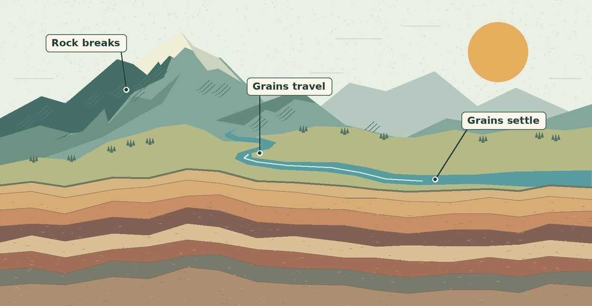

The Travelling GrainGeology fieldbook
A rock-cycle adventure
The travelling grain.
How does a piece of a mountain end up in your sandcastle?
Your brain gets stronger when you practise. Ready to learn?
Write a rock journey
Look closerMeet the rock families and the minerals inside them.
Test an ideaUse a clue, revisit a mistake or try a question on your own.
Try the mock examFour short questions and one rock journey to explain.
Success comes from learning, practising and never giving up.
Class notes · Sections 1.1–1.5
Field guide
Open a question. Read the clues, close the note and explain one idea aloud.
Questions with feedback
Test an idea
Section 1.3 · Rock cycle
The writing lab
Any rock type can become another through one or more processes. Pick a route and explain what happens along the way.
Independent practice
Mock exam
My field notes
MY LEARNING CHALLENGE
Think of one thing you can explain more clearly now. A small change counts.